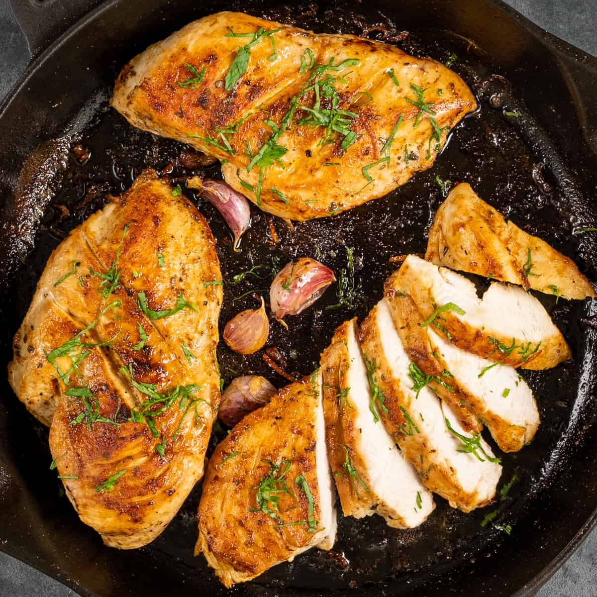

Cast Iron Steak

This recipe makes delicious chicken while using a cast iron skillet. It is beginner friendly and easy to make.
Ingredients
- 3 boneless chicken breasts
- 1 teaspoon lemon zest
- 1 teaspoon salt
- 1/2 teaspoon black pepper
- 1/2 teaspoon paprika
- 1 teaspoon thyme
- 1 tablespoon butter
- 4 cloves of garlic
- Chopped parsley
Steps
- Dry the chicken breasts with a paper towel.
- Cut thin slits on both sides of chicken breasts.
- Season both sides with salt, black pepper, paprika, thyme, and lemon zest.
- Heat skillet on high heat with a little bit of oil, then bring down to medium low.
- Melt butter in skillet and place chicken breasts. Cook for 6 minutes.
- Flip and cook other side for 6 minutes.
- Add garlic and cook for an additional 10-12 minutes, flipping frequently.
- Let the cooked chicken breasts rest for 5 minutes.
- Slice and garnish them with chopped parsley to serve. Enjoy!